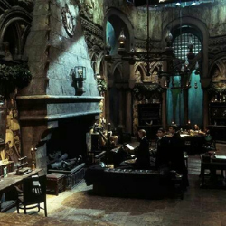

Sonserina
.png)
"Ou quem sabe a Sonserina será a sua casa
E ali fará seus verdadeiros amigos,
Homens de astúcia que usam quaisquer meios
Para atingir os fins que antes colimaram."
— O Chapéu Seletor
A Sonserina, fundada por Salazar Slytherin, é uma das quatro casas da Escola de Magia e Bruxaria de Hogwarts. Ao estabelecer a casa, Salazar instruiu o Chapéu Seletor a escolher somente alunos que obtivessem algumas de suas características particulares as quais ele prezava. Entre elas incluem a astúcia, desenvoltura, liderança e ambição. Vários membros da Sonserina possuem uma certa tendência em formar grupos, muitas vezes adquirindo líderes, o que exemplifica ainda mais as qualidades ambiciosas de Slytherin.
O fundador, de acordo com o próprio Chapéu Seletor, valorizava e favorecia estudantes de sangue puro. Entretanto, qualquer aluno que possui um status sanguíneo diferente, pode ser colocado na casa.
Seu animal emblemático é uma serpente e suas cores são verde e prata. Há dois diretores notáveis da Sonserina; Horácio Slughorn que assumiu o cargo duas vezes (primeiro se aposentou em 1981 e retornou como diretor em 1997 até pouco antes de 2016) e Severo Snape. O fantasma patrono da casa é o Barão Sangrento.
História
O estabelecimento de Slytherin por uma escola inteiramente pura foi a raiz de uma grande controvérsia entre os fundadores, bem como a causa da rivalidade entre ele e Godrico Gryffindor. Derivado a isso, e após uma discussão severa entre os dois que ocasionou a um duelo, Salazar abandonou a escola, deixando para trás uma enorme e interminável guerra entre as duas casas. Tal argumento ficou conhecido como a origem da rixa entre a Grifinória e a Sonserina, tornando ambas competitivas.
No momento em deixou Hogwarts, Slytherin também legou uma Câmara Secreta a um herdeiro, com o propósito de que algum dia, ele pudesse libertar o meio deixado para expurgar aqueles que, de acordo com sua visão, fossem indignos de estudar magia — em outras palavras nascidos trouxas. A abertura da câmara aconteceu duas vezes, e, durante sua segunda abertura, seu basilisco foi assassinado por Harry Potter em 1992.
As opiniões de Slytherin em relação aos alunos nascidos trouxas podem ser atribuídas à perseguição bruxa ocorrida na época pelas mãos de trouxas.
Traços
"Slytherin, aceitou apenas os bruxos
De sangue puro e grande astúcia,
Que a ele pudessem vir a igualar."
— O Chapéu Seletor sobre as exigências de Salazar para com os alunos classificados em sua casa
Os membros desta Casa tendem a ser líderes fortes, ambiciosos, astutos, determinados e inclinados para a autopreservação. Por possuírem sentidos altamente desenvolvidos, Sonserinos pendem a hesitar antes de agir, pensando em todos os resultados possíveis antes de decidir exatamente o que deve ser feito.
De acordo com Alvo Dumbledore, outras características que Salazar valorizava em seus alunos incluíam a inteligência, desenvoltura, determinação e "um certo desprezo pelas regras". Dumbledore também notou que todas essas qualidade eram possuídas por Harry Potter, um membro da Casa Grifinória que quase foi selecionado para a Sonserina.Os membros da Casa são hábeis em assumir o controle e possuir fortes habilidades de liderança. Freqüentemente, são autoconfiantes, leais e ambiciosos por sua própria competência.
Reputação
"Não tem um único bruxo nem uma única bruxa desencaminhados que não tenham passado por Sonserina."
— O preconceito bruxo contra a Casa Sonserina.
A Sonserina possui uma reputação bastante conhecida por formar jovens bruxos, os quais muitos consideram terem se inclinado para o caminho das trevas — o fato de o próprio Lorde Voldemort ter pertencido a casa não ajuda muito com esse estigma. Embora na maioria das vezes esse fato seja verídico, há vários outros bruxos que se relacionaram com tais características que pertencem a outras casas, como por exemplo Pedro Pettigrew, o traidor de Tiago e Lílian Potter, que estava na Grifinória, e também Quirino Quirrell, que pertencia à Corvinal.
A aparente reputação acabou gerando um preconceito irônico contra toda a casa. Não é conhecido ao certo quantos bruxos das trevas que pertenceram a esta casa haviam antes de Tom Riddle começar o seu recrutamento, embora muitos viessem de famílias que valorizam a pureza de sangue e que preferiam, assim como Riddle, um mundo igualmente puritano
Em termos mais justos, houve vários bruxos e bruxas da casa que se opunham ao uso das Artes das Trevas, bem como à discriminação com base na pureza de sangue, entre eles estão; Horácio Slughorn, Andrômeda Tonks e Leta Lestrange. Andrômeda era parente de muitos bruxos que se inclinaram para o lado das trevas, tal como sua própria irmã Belatriz Lestrange e seu cunhado Lúcio Malfoy, embora ela tenha escolhido abandonar sua lealdade com sua família a favor de se casar com um nascido trouxa chamado Ted Tonks. Leta, assim como Andrômeda, era bastante diferente da maioria de sua família, possuindo uma personalidade gentil — embora fosse autodepreciava e fria, ela conservava um amor por Newt e Teseu Scamander e também possuía bravura o suficiente para desafiar pessoalmente o bruxo das trevas Gerardo Grindelwald; um total contraste com a geralmente compassiva Queenie Goldstein, bruxa americana que pertencia à Casa Pukwudgie, que se juntou rapidamente a Grindelwald. Além disso, Severo Snape se provou leal a Alvo Dumbledore, a ponto de servir como agente triplo para a Ordem da Fênix.
Sala Comunal

A sala comunal da Sonserina fica localizada nas masmorras do Castelo de Hogwarts, abaixo do Lago Negro. Devido a isso, a luz que ilumina o ambiente é completamente opaca e esverdeada. Harry Potter, juntamente de Rony Weasley, entrou na sala comunal durante seu segundo ano escolar para descobrir se Draco Malfoy sabia quem estava por trás da reabertura da Câmara Secreta. Para adentrá-la é necessário falar em voz alta a atual senha em frente a um trecho de uma parede de pedra úmida e lisa; assim que a palavra for dita, uma porta de pedra oculta deslizará para o lado, emergindo um buraco retangular que levará até a sala comunal. A única senha conhecida é "puro sangue", usada em 1992.
Diretor da Casa
O diretor da Casa Sonserina durante os seis anos escolares de Harry Potter foi Severo Snape; no entanto, após sua fuga com Comensais da Morte em 1997, no final daquele ano, o Mestre das Poções Horácio Slughorn ocupou o cargo. Após o retorno de Snape como diretor no ano letivo posterior, aparentemente o posto continuou sendo ocupado por Slughorn, dado que nenhum Comensal da Morte foi designado como diretor da casa.